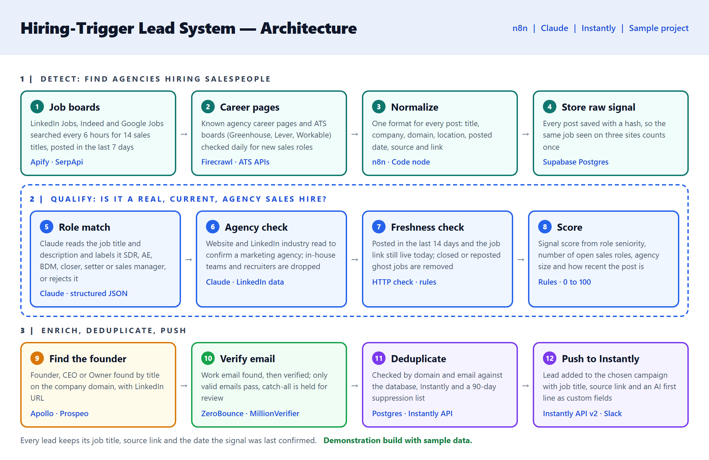
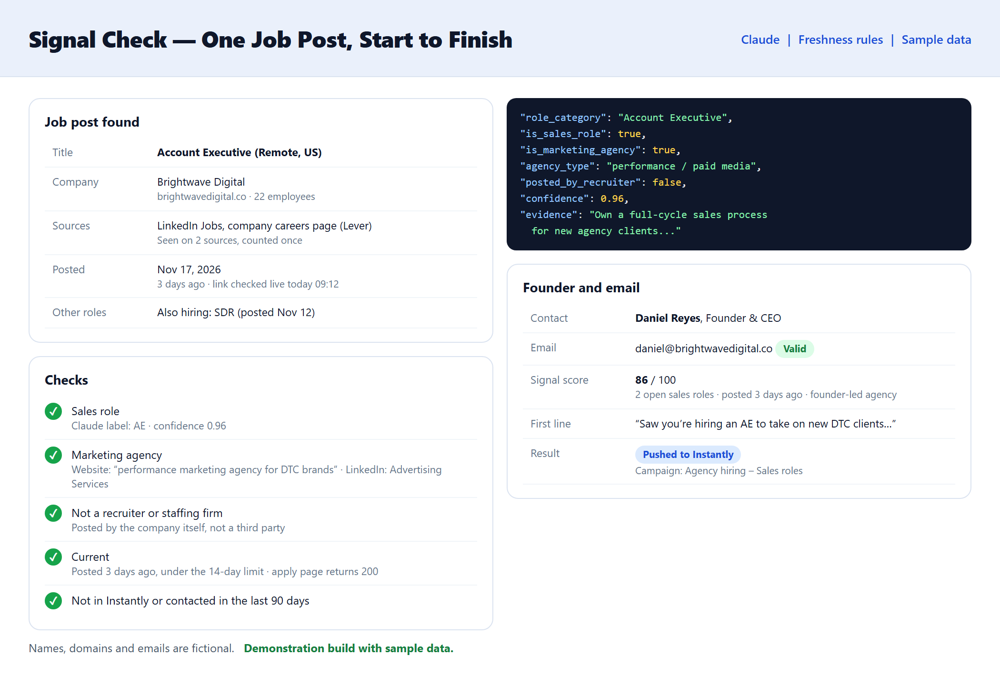
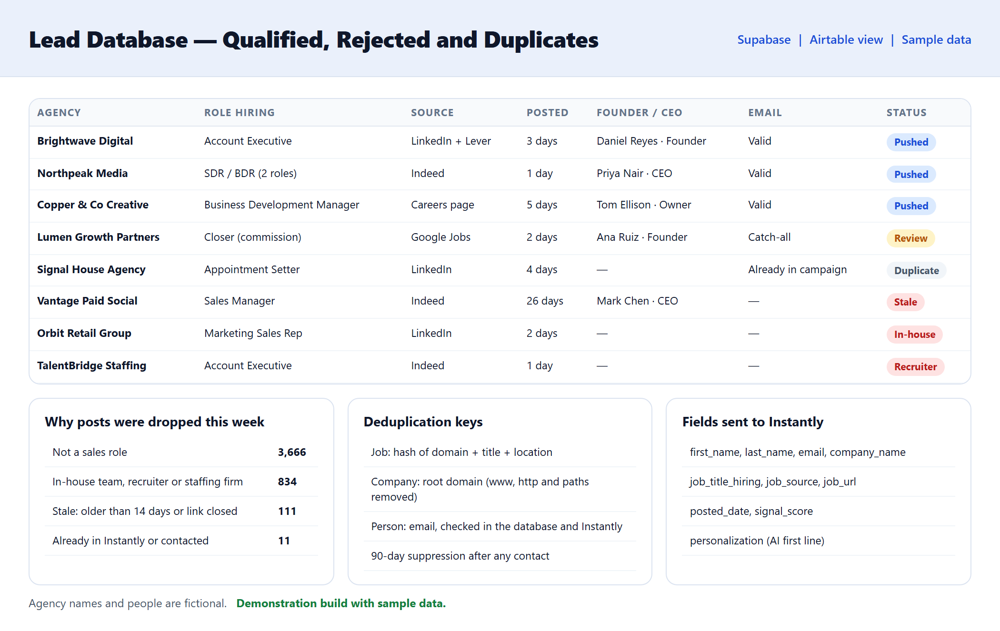
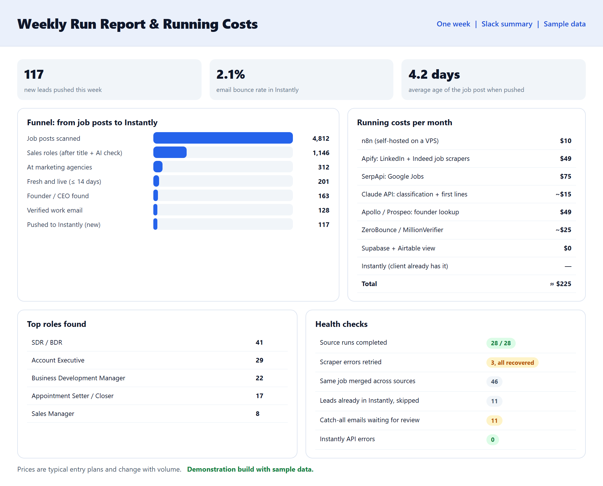
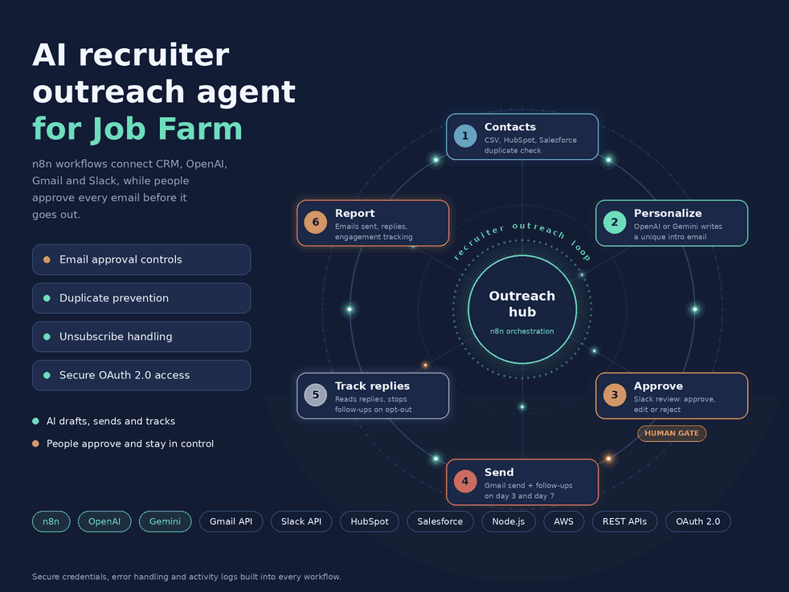
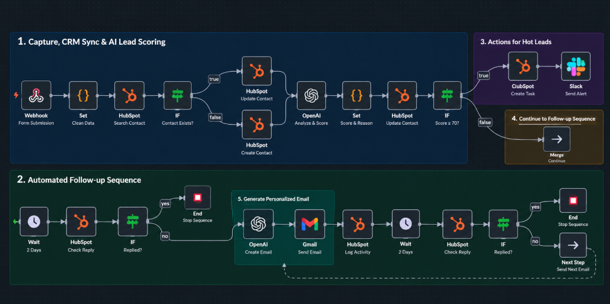

Architecture: detect hiring signals, qualify them, then enrich, deduplicate and push to Instantly.
One job post followed through every check, from discovery to the Instantly campaign.
The lead database: what was pushed, what was held, and why the rest was dropped.
Weekly report: the funnel, running costs, top roles and health checks.The challenge
An outbound agency sells sales support to marketing agencies. Their best leads were agencies that had just posted a sales job: the founder is clearly trying to grow, has budget, and is feeling the pain of doing sales alone. Finding them by hand meant scrolling LinkedIn and job boards, guessing which companies were real agencies, looking up the founder and testing emails. It took hours a day, the lists were full of old posts and recruiters, and the same agency was often contacted twice.
They wanted a repeatable internal system, not a one-off list: something that keeps bringing in fresh hiring-trigger leads every day, with the actual job title and link as proof, and puts them straight into a specific Instantly campaign.
The solution
I built the system in n8n with a Supabase Postgres database as the single source of truth. Job posts are collected from LinkedIn Jobs, Indeed, Google Jobs and agency career pages several times a day. Claude reads each post and decides whether it is a real sales role at a marketing agency. Simple rules then check that the post is recent and the job link is still live. Qualified agencies get their founder or CEO looked up, the email is found and verified, and duplicates are blocked against both the database and Instantly. Each lead goes into the campaign with custom fields for the role, source link and an AI-written first line.
How it works
- Collect job postsEvery 6 hours, Apify actors search LinkedIn Jobs and Indeed and SerpApi searches Google Jobs for 14 sales titles: Sales Rep, Account Executive, BDM, SDR, BDR, Appointment Setter, Closer, Sales Manager and their variations. Only posts from the last 7 days are pulled.
- Check career pagesA daily job checks a growing list of agency career pages and their Greenhouse, Lever and Workable boards, which often list roles before they reach LinkedIn.
- Normalize and storeEvery post is mapped to one format (title, company, root domain, location, posted date, source, link) and saved with a hash. The same job found on three sites becomes one record with three sources.
- Role matchClaude reads the title and description and returns structured JSON: the role category, whether it is really a sales role, and a short quote as evidence. “Sales” in a marketing coordinator job does not pass.
- Agency checkClaude reads the company website and LinkedIn industry to confirm it is a marketing, advertising, SEO, paid media, social or creative agency. In-house marketing teams, recruiters and staffing firms posting for clients are dropped.
- Freshness checkThe post must be 14 days old or less, and the job link is opened again on the day of the push. Closed, expired and “no longer accepting applications” pages are removed, and endlessly reposted ghost jobs are flagged.
- ScoreA signal score from 0 to 100 adds up how recent the post is, the number of open sales roles, role seniority and agency size, so the best leads go first.
- Find the founderApollo, with Prospeo as a fallback, finds the Founder, CEO or Owner on the company domain. If there is no clear founder, the most senior leader is used and marked for review.
- Verify the emailThe work email is verified with ZeroBounce, with MillionVerifier as a cheaper second check. Only “valid” passes automatically; catch-all addresses wait in a review list.
- DeduplicateThe lead is checked by root domain and email against the database, the Instantly workspace and a 90-day suppression list, so nobody is contacted twice.
- Push to InstantlyThe lead is added to the chosen campaign through the Instantly API with custom fields: the job title, source, job link, posted date, signal score and an AI first line that mentions the role.
- ReportA Slack summary each morning and a weekly report show the funnel, top roles, bounce rate and any failed runs.
Keeping the hiring signal current and accurate
- Only posts from the last 7 days are collected, and nothing older than 14 days is ever pushed
- The job link is re-checked live on the day of the push, so closed roles never reach the campaign
- A post seen on more than one source, or on the company’s own careers page, counts as a stronger, confirmed signal
- AI classification with evidence: every decision stores a quote from the job post, so any lead can be checked in seconds
- Recruiters, staffing firms and in-house marketing teams are filtered by both rules and AI
- The same job reposted again and again is flagged as a possible ghost job and scored lower
- Each lead keeps the job title, source link and the date the signal was last confirmed, so the outreach can name the exact role
Data sources and tools
- Job sources: LinkedIn Jobs and Indeed through Apify actors, Google Jobs through SerpApi, and agency career pages and ATS boards (Greenhouse, Lever, Workable) through their public job APIs and Firecrawl
- AI: Claude for role and agency classification and the personalized first line
- Contacts: Apollo for founder lookup, Prospeo as a fallback
- Email verification: ZeroBounce, with MillionVerifier for bulk checks
- Database: Supabase Postgres, with an Airtable view for the team to review held leads
- Outreach: Instantly API v2, with the campaign ID set in one place so it can be changed easily
Running costs
About $225 a month at this volume: n8n on a small VPS ($10), Apify ($49), SerpApi ($75), Claude API (about $15), Apollo or Prospeo ($49) and email verification (about $25). Supabase and Airtable stay on free plans, and Instantly is the client’s existing account. Every source is a separate module, so a paid source can be swapped or removed without touching the rest.
Reliability
- Failed scraper runs retry automatically, then alert the team in Slack with the source and the error
- Each source is its own workflow, so one broken site never stops the others
- Every lead records which step it reached and why it stopped, so nothing disappears silently
- API usage and credits are tracked, with a warning before a plan runs out
Results
- About 4,800 job posts scanned a week, narrowed to around 115 new verified founder leads
- Every lead comes with the real job title and a link to the post
- Average job post age of 4 days when the lead reaches Instantly
- Bounce rate around 2% thanks to strict email verification
- No duplicate outreach: the same agency is never added to the campaign twice
- Hours of daily manual research replaced by a 10-minute review of held leads
Demonstration build with sample data. Agency names, people and emails in the images are fictional.
Other projects

AI-driven lead research, Apollo and Hunter enrichment, qualification and HubSpot sync.

An n8n agent that writes personalized recruiter emails, gets human approval in Slack and handles follow-ups.

AI scores every new lead, alerts on hot ones and runs a follow-up sequence that stops on reply.